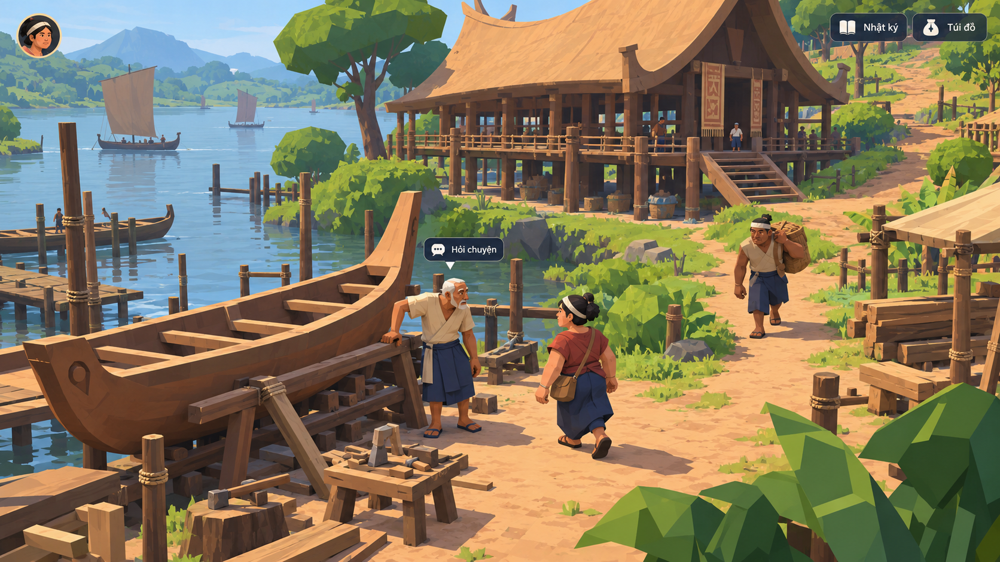

Thử hình khối, tỷ lệ và camera qua ba hướng: Khối Lạc nhìn chéo, Dải đời sống 2.5D và Trong lòng làng gần tầm người. Mỗi hướng có một khung thế giới và một trạng thái đối thoại riêng.
3 hướng × 2 khung ảnh · Bổ sung thư viện tham khảo · Chờ chủ dự án chốt
3D CÁCH ĐIỆU / NHÌN CHÉO
Khối Lạc · Thế giới

Thử camera nhìn chéo với khối lớn, bóng gọn và tỷ lệ người được thiết kế cho game. Quan sát lối đi, sàn cao, vật che nhau và người đang làm việc.
Ảnh đề xuất diện mạo game; cảnh và UI trong artwork là raster minh họa. Các nút trên trang chỉ phục vụ xem ảnh.
Chưa tải được ảnh. Kiểm tra thư mục assets của thử nghiệm 13.
Đang xem Khối Lạc · Thế giới.
Phím 1 / 2: Khối Lạc · 3 / 4: Dải đời sống · 5 / 6: Trong lòng làng. Mở ảnh toàn khung hoặc PNG gốc để xem kỹ. Cỡ chữ trang xem chỉ đổi chữ HTML, không làm chữ trong ảnh reflow.
KHUNG THẾ GIỚI → TRẠNG THÁI ĐỐI THOẠI
Kiểm cách nhìn trước, rồi kiểm cuộc gặp.
Ảnh thế giới dành trọn khung cho camera, người, hình và không gian. Ảnh đối thoại tách riêng để xem người nói, câu nói và lựa chọn có cùng ngôn ngữ. Không ghép một dải asset dưới mỗi cảnh để thay việc kiểm màn hình chơi.
Các khung là ảnh tạo riêng; một số dùng ảnh trước làm tham chiếu để giữ hướng tạo hình. Tình huống, vai nhân vật và vật chính được giữ để so sánh; không hứa cùng geometry, ánh sáng hoặc cast khớp tuyệt đối. Hai hướng có diện mạo 3D chỉ là đề xuất bằng ảnh, chưa có scene/model/runtime mới.
Khối lớn · camera nhìn chéo
Khối Lạc
Đặt hình khối, tỷ lệ và vùng đi lại làm trọng tâm. Cùng một quy tắc giản lược cần đi qua người, nhà, cây và vật dụng.
Câu hỏi thử: Nếu chỉ một vài bề mặt có cạnh còn cả cảnh giữ mật độ/tỷ lệ cũ, hướng này vẫn chưa thay được cách tạo hình.
Quan sát bản này: Khối người, thuyền và cây đã rõ hơn; nhân vật trong khung thế giới vẫn lớn hơn tỷ lệ đặt ra, mái và nền còn khá nhiều chi tiết. Đối thoại có speaker, câu nói và lựa chọn.
Hình cô đọng · lớp sinh hoạt
Dải đời sống
Dùng các dải/cao độ, nhịp người và khoảng trống để tổ chức cảnh. Đây là một cách nhìn khác, không chỉ dịch camera ngang của phong cảnh cũ.
Câu hỏi thử: Khung nhìn ngang có đọc được lối tiếp cận và cuộc gặp, hay chỉ thành một bức tranh trang trí? Chưa có parallax hoặc điều khiển thật.
Quan sát bản này: Bản thế giới ban đầu còn sâu và nhiều chi tiết; lượt sửa đã làm phẳng mái, sàn, đường và nước thành dải rõ hơn. Cặp đối thoại giữ được cách vẽ này, nhưng vẫn có chuyển sắc và chi tiết vượt ý định cực giản.
Giữ ý định hình khối/cast của hướng nhìn chéo, thử một cuộc đời ở tầm người và trong tầm tay.
Câu hỏi thử: Camera gần có làm rõ sự hiện diện mà vẫn giữ mức giản lược? Ảnh độc lập chưa chứng minh cùng geometry hoặc camera tự do.
Quan sát bản này: Khung thế giới vẫn nhìn chếch từ cao, chưa đạt rõ camera ở tầm lưng như brief. Khung đối thoại tiến gần mặt và tay; cùng họ tạo hình với Khối Lạc, không phải một phong cách hoàn toàn riêng.
Thư viện tham khảo — mọi phiên bản được giữ lại
Ba hướng và sáu khung này bổ sung thư viện. Vòng mới không tự thay thế, loại bỏ hay đánh giá thấp các bản cũ; có thể quay lại để so sánh hoặc kết hợp.